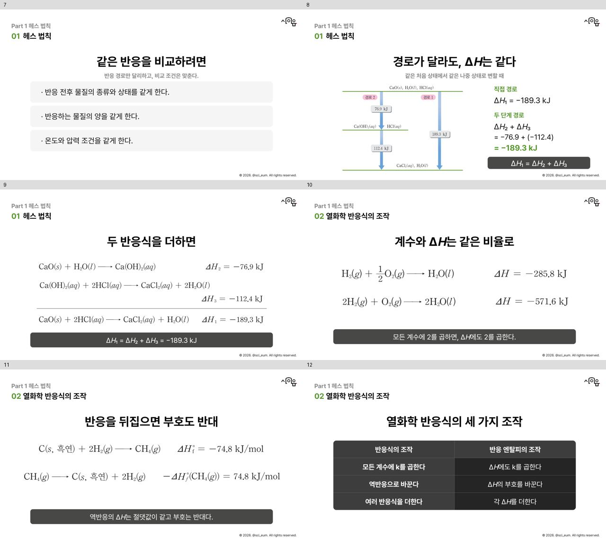
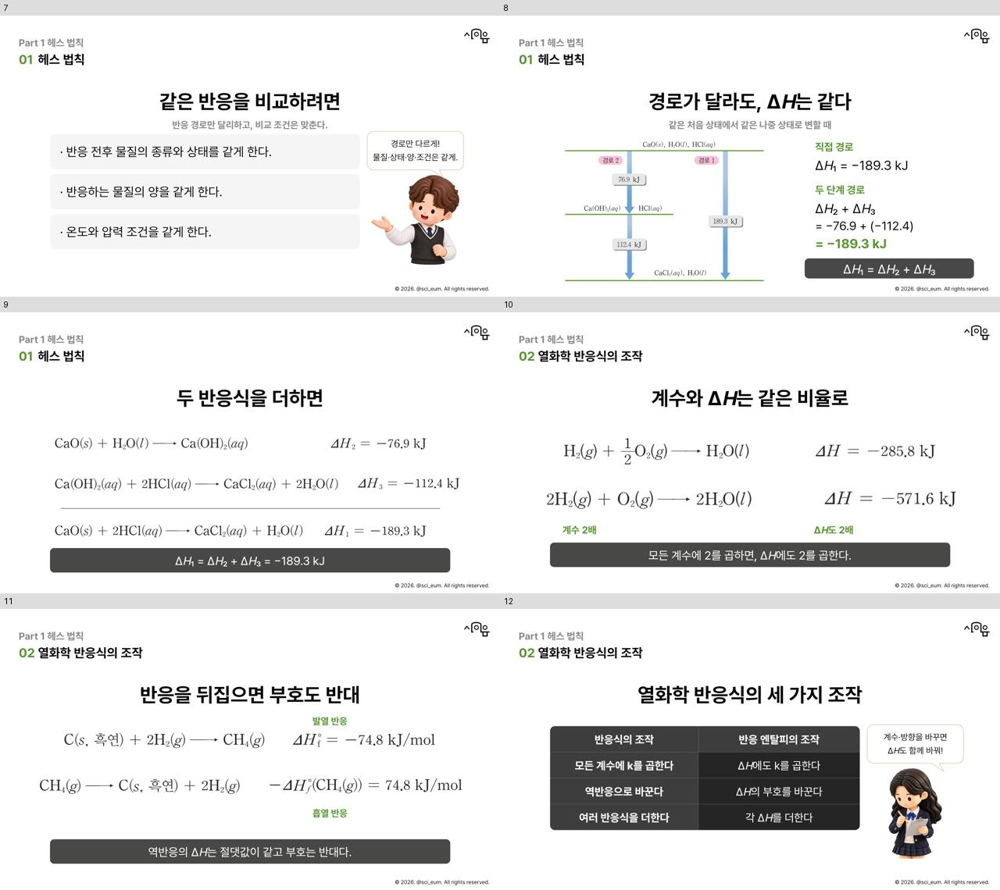
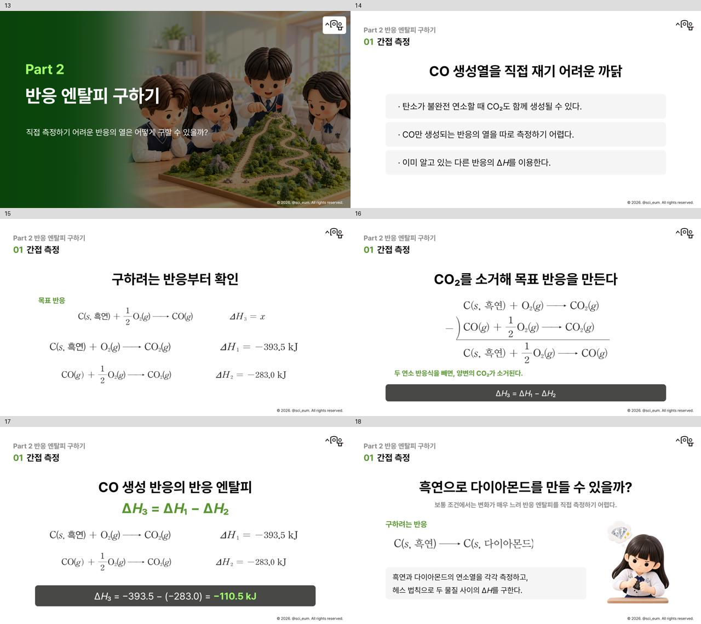
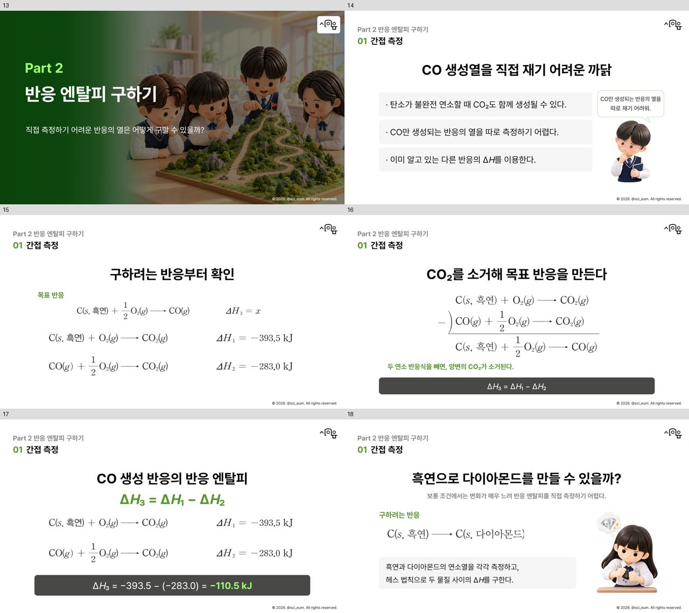
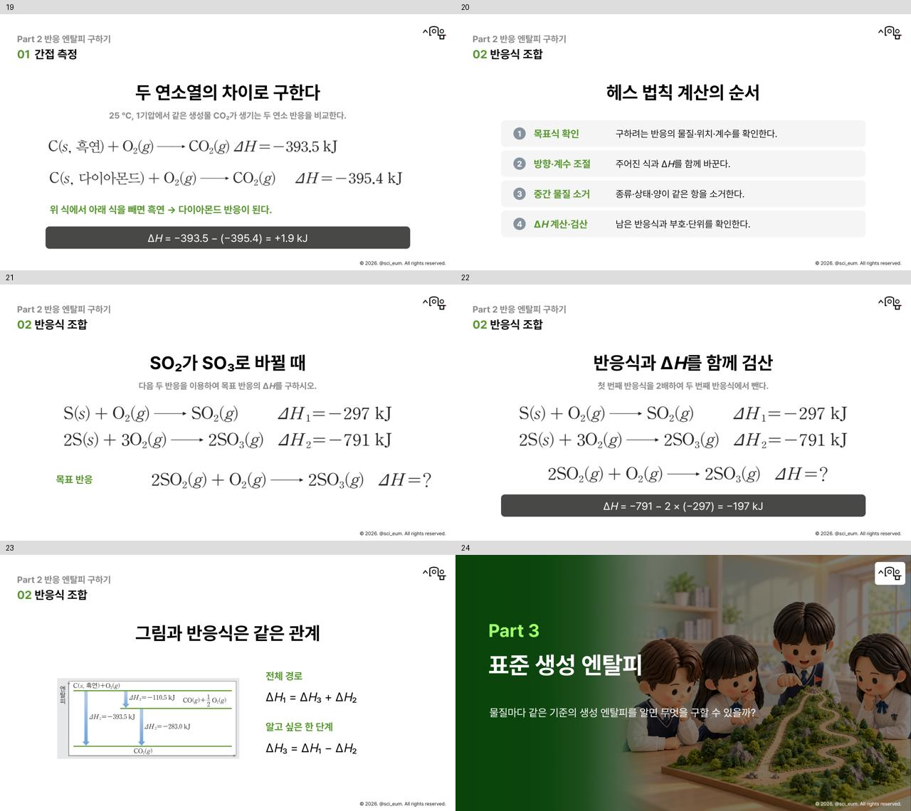
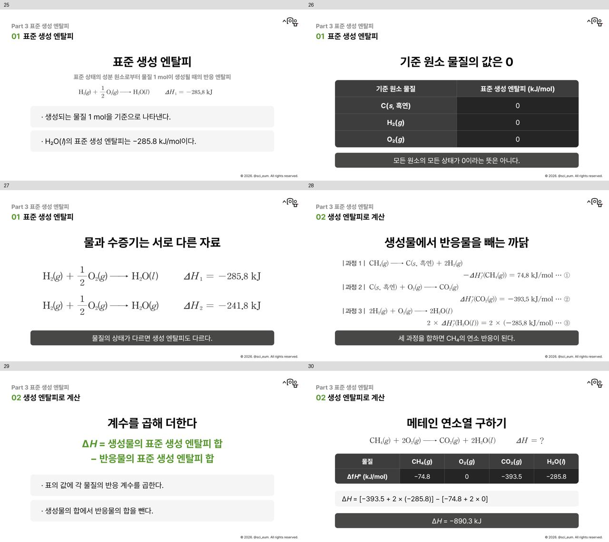
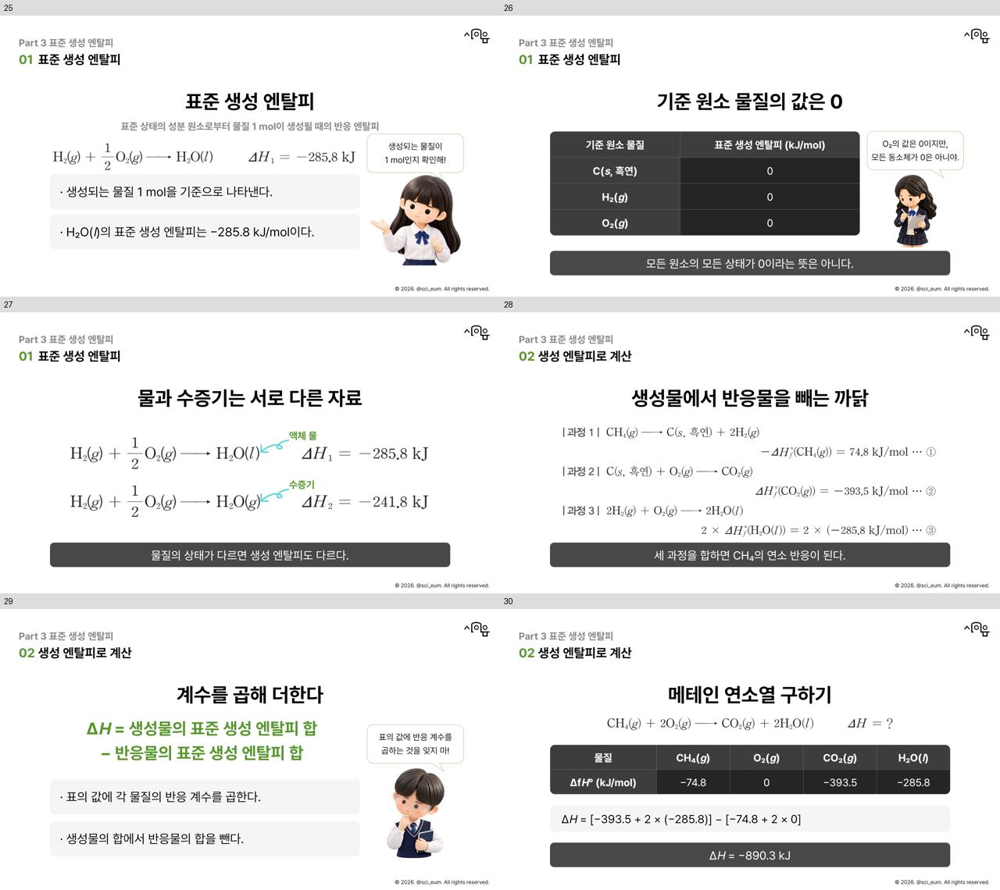
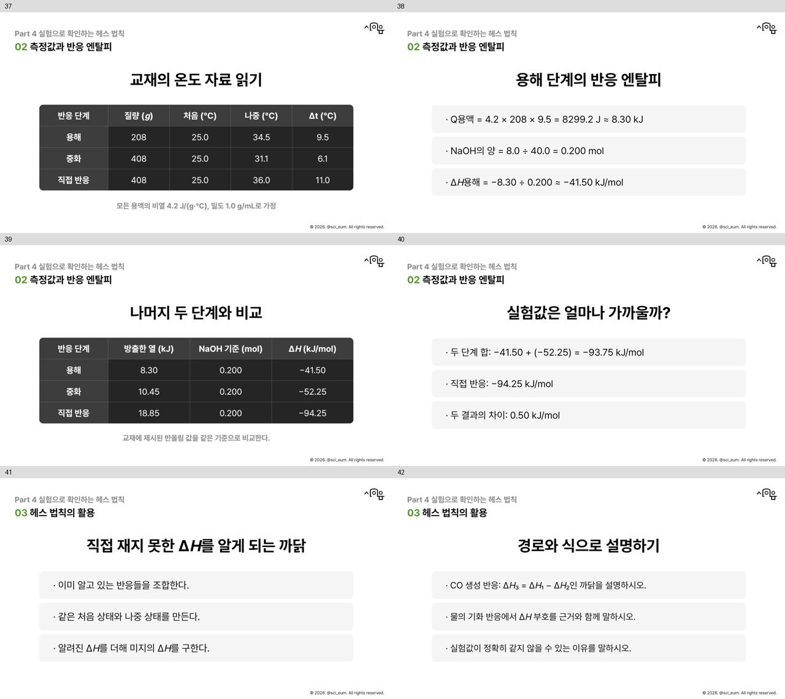
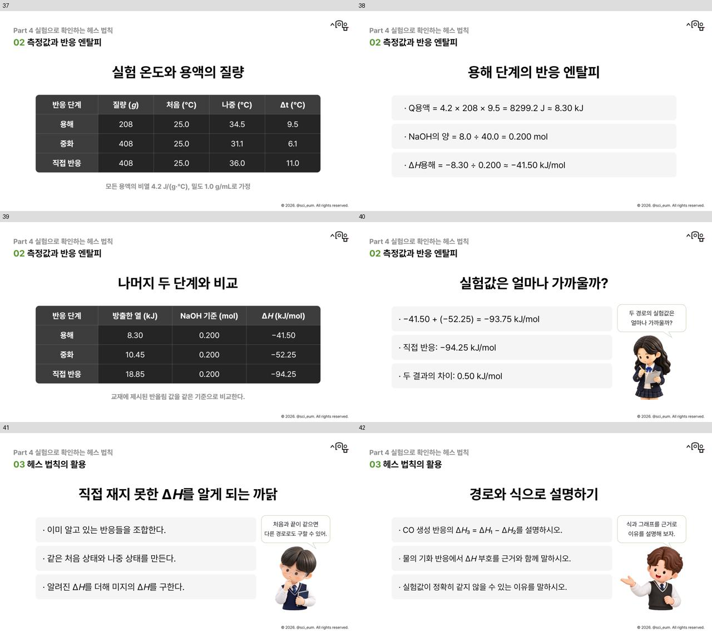

레퍼런스6종474쪽 추가 · 네 인물의 역할 순환 · 원본 반응식 유지
구조·글꼴 검사 오류0, 이미지 비율99개 확인, 가로 글자 너비335개 확인, 계산11개 검산. 실제 PowerPoint 재생·Figma 대조·사용자 디자인 승인은 포함하지 않습니다.









| 장 | 제목 | 결과 |
|---|---|---|
| 1 | 표지 | 원래 표지·녹색 그라데이션 유지, 두 줄 제목·첫장 로고 |
| 2 | 다른 길로 가도, 높이 차는 같을까? | 원본 비율·두 등산로·남학생 사용자 지정 고글 유지 |
| 3 | 수업 목차 | 네 목차 블록·좁은 간격·문구 유지 |
| 4 | 학습 목표 | 목표 문구·번호 정렬 유지, 원본 참조 여학생 교체 |
| 5 | Part 1 헤스 법칙 | 동일 표지 배경·51% 검정 덮개·T셀파 없음 |
| 6 | 헤스 법칙 | 가운데 점·완결된 세 줄·둘째 문구·기울임H 유지 |
| 7 | 같은 반응을 비교하려면 | 비교 조건3항·갈색남학생·직접 연결 말풍선 |
| 8 | 경로가 달라도, ΔH는 같다 | 원본 CaO 그래프·직접/두단계 수치 대조 |
| 9 | 두 반응식을 더하면 | 원본 중화식의 ΔH를 한 줄에 재배치·물질소거 검산 |
| 10 | 계수와 ΔH는 같은 비율로 | 물 생성식2배·같은 글자 크기·계수와ΔH에 직접주석 |
| 11 | 반응을 뒤집으면 부호도 반대 | 원본 역반응·부호 반대·발열/흡열 직접주석 |
| 12 | 열화학 반응식의 세 가지 조작 | 표 하단 여백·원본4명 중 확인역할·말풍선 |
| 13 | Part 2 반응 엔탈피 구하기 | 표지 배경 반복·명암·로고 규칙 유지 |
| 14 | CO 생성열을 직접 재기 어려운 까닭 | CO 직접측정 설명·안경남학생 질문 연결 |
| 15 | 구하려는 반응부터 확인 | 원본 CO 목표식·연소식·같은 배율 적용 |
| 16 | CO₂를 소거해 목표 반응을 만든다 | 원본 CO2소거식·원소수/산소1/2mol 검산 |
| 17 | CO 생성 반응의 반응 엔탈피 | CO 두 연소식의 크기 통일·−110.5kJ 검산 |
| 18 | 흑연으로 다이아몬드를 만들 수 있을까? | ΔH3=? 삭제 유지·보통조건·흑연누르는 여학생 개념장면 |
| 19 | 두 연소열의 차이로 구한다 | 완자 원본 연소식·+1.9kJ·1.88혼용 안함 |
| 20 | 헤스 법칙 계산의 순서 | 목표/조절/소거/검산4단계 정렬 유지 |
| 21 | SO₂가 SO₃로 바뀔 때 | 황 반응 원본의 배경 투명화·같은 글자 크기 유지 |
| 22 | 반응식과 ΔH를 함께 검산 | 원본 반응식·−197kJ 검산·배경 없음 |
| 23 | 그림과 반응식은 같은 관계 | 원본 CO 그래프·ΔH1=ΔH3+ΔH2 관계 확인 |
| 24 | Part 3 표준 생성 엔탈피 | Part3 배경·51%명암 유지 |
| 25 | 표준 생성 엔탈피 | 원본 물 생성식 확대·1mol 기준·긴머리여학생 |
| 26 | 기준 원소 물질의 값은 0 | 표 제목·모든셀가운데·기준원소0의뜻·여학생/바 겹침해소 |
| 27 | 물과 수증기는 서로 다른 자료 | 동일상태별원본식·액체/수증기 직접라벨·원본곡선화살표 |
| 28 | 생성물에서 반응물을 빼는 까닭 | 원본 세과정·역반응부호·최종합산 확인 |
| 29 | 계수를 곱해 더한다 | 관계식 왼쪽 정렬묶음·계수확인 안경남학생·겹침없음 |
| 30 | 메테인 연소열 구하기 | 원본 메테인식·편집가능표·−890.3kJ 검산 |
| 31 | 물의 상태 변화 엔탈피 | 원본 상태그래프·25°C기화자료+44.0kJ·100°C와구분 |
| 32 | 생성 엔탈피 계산의 확인점 | 확인표 여백·기준/상태/계수/단위 질문·남학생 |
| 33 | Part 4 실험으로 확인하는 헤스 법칙 | Part4 배경·명암·로고 유지 |
| 34 | 같은 처음과 끝을 만드는 두 경로 | NaOH 경로/반응식 원본·중간물질대조 |
| 35 | 실험 조건을 맞추자 | 실험I 원본사진·캡션 구분·냉각조건·몰수 |
| 36 | 용액이 얻은 열에서 반응열로 | Q=cmΔt·반응부호·설명여학생·하단바겹침해소 |
| 37 | 실험 온도와 용액의 질량 | 구체적 제목·208/408/408g·온도상승대조 |
| 38 | 용해 단계의 반응 엔탈피 | 8.30kJ·0.200mol·−41.50kJ/mol검산 |
| 39 | 나머지 두 단계와 비교 | 완자 중간반올림자료 한세트·표열정렬·−52.25/−94.25 |
| 40 | 실험값은 얼마나 가까울까? | 실험근사일치·차이0.50kJ/mol·검토여학생 |
| 41 | 직접 재지 못한 ΔH를 알게 되는 까닭 | 유용성 요약·처음과끝 조건·질문남학생 |
| 42 | 경로와 식으로 설명하기 | CO·상태변화·실험오차 확인과제·설명남학생 |